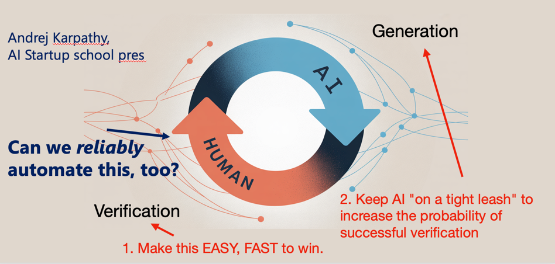

(or, as a colleague suggests, "Obvious Things that Need to be Said")
A five-part series on the hidden uncertainty in AI evaluation metrics
Executive Summary
- In agentic AI, evaluation is the bottleneck. Agentic AI systems can iterate on development far faster than organizations can learn from them. The limiting factor is evaluation.
- Evaluation is hard because it is an experiment design problem, not a software testing problem. Each evaluation embeds many consequential design decisions — about data, judges, aggregation, selection, and reporting — that can dramatically change the apparent outcome.
- Most organizations are neither equipped nor incentivized to manage agentic evaluation. Tooling, methods, training, and reporting structures systematically hide uncertainty and overstate progress.
- This is primarily a leadership failure, not a technical one. The questions executives ask — and the dev-heavy way teams are structured rather than eval-heavy — shape what teams feel able to report, leading to biased summaries that hide evaluation uncertainty.
- This is fixable — failure modes are not inherent to AI. They require better evaluation practices, reporting standards, and decision discipline — not stricter mandates, frozen benchmarks, or the illusion that ground truth solves anything.

You have all been in this room. A slide goes up. There's a metric—"Technical Accuracy", a number: 89%, and a color—green.
Getting these metrics, numbers, and even the colors "right" are foundational to the success of a product. These numbers - and colors - are the final output of a complex process of decisions and actions.
This output is very consequential. Not only does it determine ship/no-ship decisions, but it tells engineers where to focus their energy, where to improve. The metrics act like a loss profile and give us axes along which we need to improve our product.

And as AI takes more of a leading role in development, getting the right metrics and the right measures is central to effective product improvement iterations - possibly even automating the entire process. Conversely, if we get these wrong, we iterate in the wrong directions, we ship things that make our customers lose trust in us, we hold back great features that could help us win deals.

As I sit in the room at a customers' site and listen to presentation after presentation and report after report, I can't help but wonder: how reliable are these numbers? Do the team reporting on the results know? And do we, and the executives sitting in the room with me, know? Do we grasp what that means for the decision we're about to make?
This series explores a structural problem in how organizations evaluate AI systems: we are building highly consequential systems, making decisions based on evaluation numbers, and systematically both underestimating and ignoring the bias and uncertainty in those numbers.
The problem statement. Why "89% accuracy" might be meaningless—or worse, misleading. The three facets of the problem: visibility, culture, and action.
The real costs of ignoring uncertainty: wasted cycles, misallocated portfolios, and production failures that were predictable all along. How bias and noise compound across organizations.
The value of better measurement. Why better eval leads to better quality even without touching the system.
The technical deep dive. From sample size effects to multiple hypothesis testing, from developer-induced overfitting to noisy LLM judges, from rubric mapping artifacts to prompt sensitivity. Each source alone can flip your decisions. Together, they compound.
The path forward. Addressing visibility (awareness, estimation, reporting), action (reducing uncertainty, building observability), and culture (naming things right, asking the questions, making accountability explicit). Practical tools including evaluation worksheets and AI-powered methodology assistants.
Every score has two error terms: bias (systematic) and noise (random). Together they constitute the uncertainty we ignore. Bias is harder to see but often more dangerous.
Selection turns noise into bias: Even unbiased evaluations become optimistic when you pick winners. The math is real.
Small differences are noise: If per-system measurement noise is σ ≈ 4 points, a true 4-point gap still gives you a ~24% chance of picking the wrong one (independent Normal noise).
The uncertainty is larger than you think: Sample size alone gives you a ~16-point-wide 95% confidence interval on 100 examples at 82% accuracy (≈82% ± 8). And that's the optimistic case.
Better eval beats more dev effort: Investing in measurement first enables better deployment decisions and directed improvement—even before touching the agents.
Culture matters: Organizations prefer harmony. Point estimates feel decisive. Uncertainty feels like weakness. But pretending certainty where none exists—that's weakness.
I teach two 100% free, in-person (with remote options) complementary practitioner courses:
Classes and materials become available as the courses start in mid-February.
Contact me for free remote attendance options (LinkedIn · X).
"Any measurement, without knowledge of the uncertainty, is meaningless."
— Walter Lewin, MIT
Glossary and Notation — Key terms and notation used throughout this series.